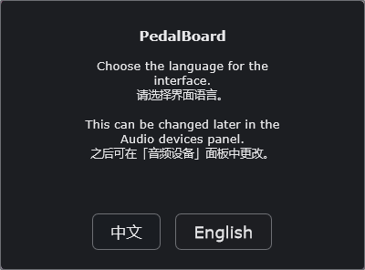
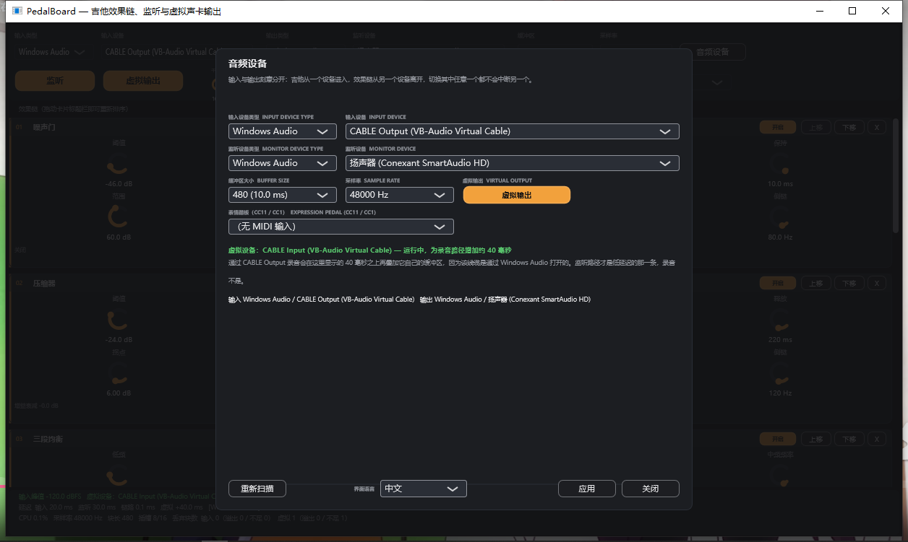
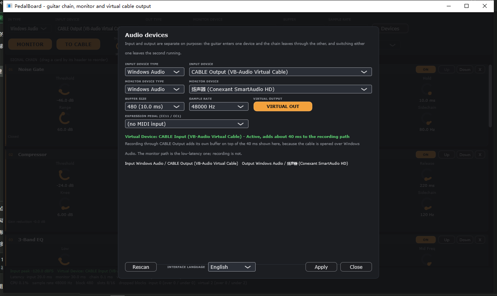
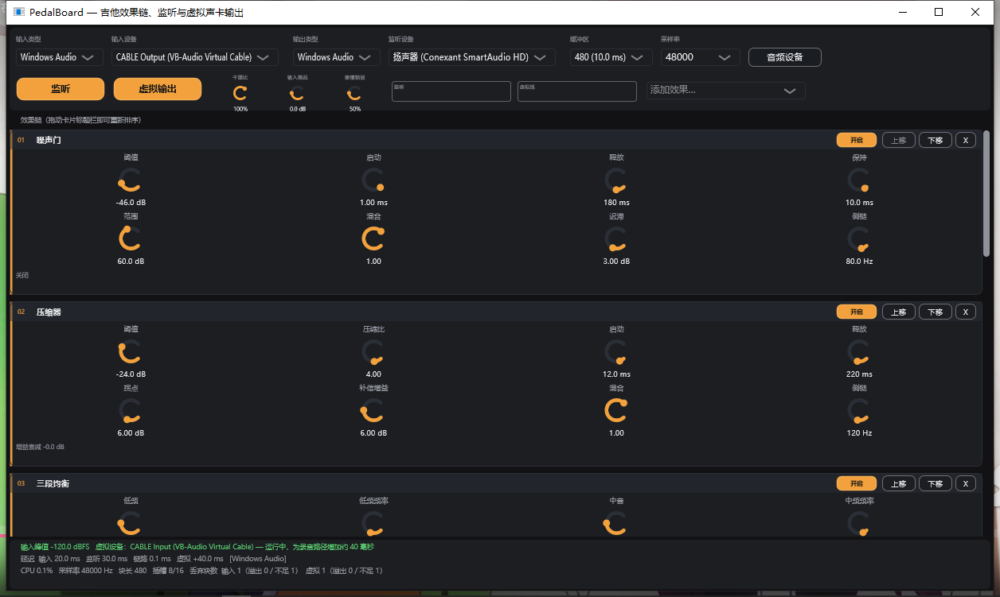
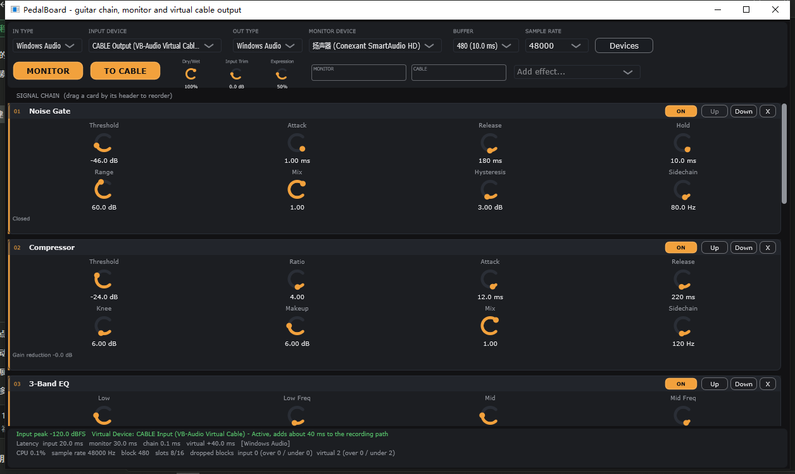
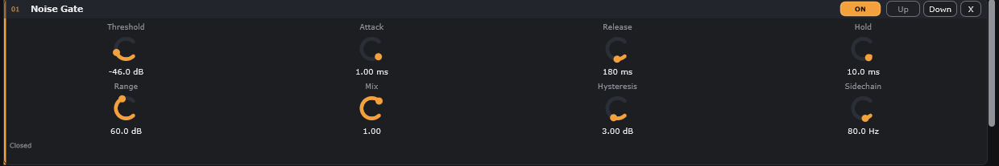

A complete beginner walkthrough for PedalBoard: install, devices, levels, knobs, the default chain, five starting sounds, saving and troubleshooting. Follow it once, and the app stops feeling like a puzzle.
PedalBoard is a standalone Windows app. It does not need a DAW, a plugin folder, an account, or a driver install. You need a guitar signal, an output for headphones or speakers, and about fifteen minutes.
Windows 10 or 11 on a 64-bit PC.
A guitar, bass, or any mono instrument source.
An audio interface (recommended) or a USB guitar cable.
Headphones, or speakers placed away from the guitar and microphone.
Optional: Audacity and VB-CABLE, only if you want to record.
A laptop microphone can prove it works — but not much more.
It will pick up the room, the pick noise and the speaker. If the first test sounds thin or noisy, that is the input, not the effect chain. Use an interface or USB guitar cable for anything you care about.
02 — INSTALL
Download, unzip, run.
There is no installer and no registry surgery. The whole app lives in one folder, including its settings.
01
Get the zip from GitHub Releases
Open the Releases page and download PedalBoard-v1.0.0-windows-x64.zip. Avoid third-party download mirrors.
Right-click the zip → Extract All. Use a path such as D:\PedalBoard. Do not run the exe from inside the zip preview, and avoid Program Files if you want to move the folder later.
D:\PedalBoardWindows x64
PedalBoard.exe8.1 MB · no installer
PedalBoardData\settings and plugin state
Resources\built-in cabinet IRs
Your folder may also contain the README and licence.
03
Run PedalBoard.exe
Double-click the exe. It is a native Windows build; no extra runtime install is needed.
SmartScreen may warn you.
The release is not code-signed. Click More info → Run anyway. If Windows Defender flags the file, verify the SHA-256 on the download page before deciding.
04
Answer the language question
On the very first launch PedalBoard asks English or 中文. The whole interface, including effect names, knob labels and device status, follows your choice. You can change it later in Devices → Interface Language, or with the EN/中文 switch on this website.

ACTUAL UI
The actual first-launch promptBoth languages are offered before the main window is built, so nothing is shown in the wrong language first.
PedalBoard v1.0.0 · Windows 10
Settings live next to the exe.
PedalBoard creates a PedalBoardData folder beside PedalBoard.exe. It stores devices, the chain, every knob, the UI language, the cabinet IR choice and hosted-plugin state. Move the whole folder together and nothing is lost.
03 — DEVICES
Tell it where the guitar is.
PedalBoard keeps input and monitor output separate on purpose: the guitar can enter one device while you listen on another. Open Devices in the top-right corner of the app.


ACTUAL UI1234
The Audio devices panel, captured from PedalBoard 1.0.0The panel opens with the last devices and the system defaults. Replace the input with your guitar interface before playing.
PedalBoard v1.0.0 · Windows 10 · UI language can be switched inside this panel
1Input driver and input device. Choose your interface, not CABLE Output, for playing.2Monitor driver and device. This is what you hear; headphones are safest.3Buffer size and sample rate. 256 / 48000 Hz is a safe start; the options depend on the driver.4Apply commits the choices. Rescan refreshes the device list; Close leaves without applying.
Recommended first settings
Driver type: Windows WASAPI for both input and monitor. MME and DirectSound are fallbacks; ASIO is only available if the app was built with the ASIO SDK.
Input: your interface, not “Stereo Mix” and not the laptop microphone.
Monitor: your headphones or interface output. Do not choose CABLE here; CABLE is the recording path.
Buffer: 256 samples to start. Lower to 128 or 64 if your CPU keeps up; raise to 512 if you hear crackles.
Sample rate: 48000 Hz. Recording software should use the same rate.
Press Apply. If a device is missing, plug it in and press Rescan. Close other apps that may be holding the interface in exclusive mode.
If the app says no audio device is running
Open Devices → choose an input and a monitor output → Apply. The status line will name the device that failed. On a laptop, make sure the interface is connected before opening PedalBoard.
04 — LEVEL
Aim for −12 to −6 dBFS.
Effects cannot fix a clipped input. Set the level before you fall in love with a sound.
Input peak in the status bar
Green and moving around −12 dBFS is healthy. Red at 0 dBFS is clipped.
Play your loudest chord or hardest picking.
Raise the gain on the audio interface until the peak sits around −12 to −6 dBFS.
Use PedalBoard's Input Trim only for fine correction. It offers ±24 dB; double-click it to return to 0 dB.
If the peak hits 0, turn down. Lowering a knob later cannot recover the clipped waveform.
Two meters, two jobs.
MONITOR shows what you hear. CABLE shows what the virtual output sends to a recording app. If MONITOR moves but CABLE is silent, VIRTUAL OUT is off or VB-CABLE is not running.
05 — FIRST SOUND
Five checks, then play.
Devices: input and monitor are both selected, and Apply has been pressed.
MONITOR is on, and TO CABLE is on only if you plan to record.
Every card's ON switch is on; Dry/Wet is at 100%.
Headphones are connected to the selected monitor device, not to the laptop's other output.
The input meter moves when you play.
Strum a chord. You should hear the default eight-effect chain. If the sound is too dirty, turn Overdrive off with its ON switch and listen again — the difference tells you what that stage is doing.
No sound?
Check the status line at the bottom of the app. It reports input peak, device state, latency and dropped blocks. If it says the monitoring path is not running, go back to Devices and apply an output. The troubleshooting chapter covers the rest.
06 — CONTROLS
Three gestures and one menu.
Every effect is a card in the chain. The card header reorders it, the ON switch bypasses it, and the knobs underneath shape it.


ACTUAL UI1234
The main window with the default chain on first launchChinese UI shown. Press EN/中文 in the site header to see the English capture.
PedalBoard v1.0.0 · Windows 10 · 1256 × 751
1Devices opens the panel above. This is the first button to find.2ON bypasses one card without losing its settings. Up / Down / X reorder or remove it.3The chain starts here. Drag a card by its header to move it.4The status bar: input peak, device state, latency, CPU, sample rate, slots, dropped blocks.
Action
What it does
Drag a knob up / down
Adjusts the value. 300 px covers the full range.
Shift + drag
Five times finer movement for precise values.
Double-click a knob
Returns that knob to its factory default.
Focus a knob, press ← → / ↑ ↓
Steps the value by one interval, for keyboard users.
ON
Bypasses the effect without deleting it or losing its settings.
Up / Down
Moves the card one slot. You can also drag the card by its header.
Remove (×)
Takes the card out of the chain. Its knob values are remembered for next time.
Add effect…
Adds one effect from the menu. The chain holds 16 slots and each type may appear once.

ACTUAL UI123
One card, three areasThe Noise Gate card at 1256 px wide, cropped from the actual window.
PedalBoard v1.0.0 · actual app capture
1ON / bypass. The card keeps its knob values while bypassed.2Up, Down and X. Reorder or remove the card; drag the header for bigger moves.3Knobs. Drag vertically, hold Shift for fine control, double-click to reset.
Global controls
Dry/Wet blends the whole chain against the clean input. 100% is fully processed.
Input Trim is a clean ±24 dB correction before the chain.
Expression can be driven by the knob or by a MIDI expression pedal. With MIDI connected, the knob follows the pedal.
MONITOR and TO CABLE are independent switches with their own level meters.
The status bar at the bottom is the honest panel: input peak, latency, CPU, sample rate, block size, slots used, dropped blocks, and the virtual output state. When something feels wrong, read it before changing random knobs.
07 — DEFAULT CHAIN
Eight effects, and why they are here.
The default order is a conventional pedalboard: clean up and control the signal first, add dirt, then time and space, then the speaker, then a looper at the end. You can change it, but this order is a safe place to start.
Effect
What it is for
Default starting point
Noise Gate
Silences hiss and hum between phrases.
Threshold −46 dB · Hold 10 ms · Release 180 ms · Hysteresis 3 dB
Compressor
Evens out picking and adds sustain.
Threshold −24 dB · Ratio 4:1 · Attack 12 ms · Release 220 ms · Makeup 6 dB
3-Band EQ
Shapes low, mid and high before the drive.
Low / Mid / High 0 dB · 90 / 900 / 4500 Hz
Overdrive
Adds gentle dirt and compression.
Drive 35% · Tone 55% · Level 45% · Bass 0 dB
Delay
Adds repeats behind the note.
Time 380 ms · Feedback 35% · Tone 60% · Mix 30% · Stereo
Makes a direct signal sound like a guitar speaker.
1x12 V30 · Bass 0 dB · Treble 0 dB · Mix 100%
Looper
Records a 30-second phrase and overdubs.
Level 0 dB · Tone 18 kHz · Mix 100%
The two cards with buttons
Cabinet has four buttons: 1x12 V30, 2x12 Open, 4x12 High Gain and Load IR… The first three are built in; Load IR accepts WAV, AIFF, FLAC, OGG and MP3. Looper has Rec, Play/Stop, Overdub, Clear and Undo, with one level of undo.
Order is not sacred.
Put the gate first, keep time effects late, and experiment in between. If a change makes the sound worse, drag it back — the chain is not permanent.
08 — STARTING SOUNDS
Five sounds you can build now.
These are starting points, not factory presets. Set the listed knobs, then trust your ears. PedalBoard has no preset browser yet; the current chain and every knob are saved automatically, so you can always come back to where you left off.
Clean
START HERE
A clean platform for chords and fingerstyle. The drive stays out of the way.
Noise Gate
Threshold −50 dB · Hold 10 ms
Compressor
Threshold −24 dB · Ratio 4:1 · Makeup 6 dB
3-Band EQ
Low / Mid / High 0 dB
Overdrive
ON off (bypassed)
Delay
380 ms · Feedback 25% · Mix 15%
Reverb
Decay 45% · Damping 45% · Mix 18%
Cabinet
1x12 V30 · Mix 100%
Acoustic
NATURAL
For an acoustic with a pickup. Cut the piezo quack and keep the cabinet light.
Noise Gate
Threshold −52 dB
Compressor
Threshold −26 dB · Ratio 3:1 · Makeup 5 dB
3-Band EQ
Low −3 dB · High +1 dB
Overdrive
ON off
Delay
320 ms · Feedback 18% · Mix 12%
Reverb
Decay 40% · Damping 55% · Mix 15%
Cabinet
Mix 20% (or bypass)
Crunch
ROCK
A rhythm sound with bite. The EQ pushes the mids before the drive.
Noise Gate
Threshold −48 dB · Hold 10 ms
Compressor
Threshold −24 dB · Ratio 4:1 · Makeup 6 dB
3-Band EQ
Low +2 dB · Mid +1 dB · High 0 dB
Overdrive
Drive 50% · Tone 55% · Level 45%
Delay
380 ms · Feedback 30% · Mix 20%
Reverb
Decay 50% · Mix 20%
Cabinet
2x12 Open
Lead
LONG NOTES
More sustain, a little more delay, and the guitar sits forward.
Noise Gate
Threshold −46 dB
Compressor
Threshold −28 dB · Ratio 6:1 · Makeup 7 dB
3-Band EQ
Mid +2 dB
Overdrive
Drive 65% · Tone 60% · Level 50%
Delay
380 ms · Feedback 35% · Mix 25% · Ping-Pong
Reverb
Decay 55% · Mix 25%
Cabinet
2x12 Open
Ambient
SPACE
Wide repeats and a long tail. Keep the gate low so the decay is not cut.
Noise Gate
Threshold −58 dB
Compressor
Threshold −22 dB · Ratio 3:1
3-Band EQ
High +1 dB
Overdrive
Drive 15% · Tone 55%
Delay
500 ms · Feedback 45% · Mix 35% · Mod 20% · Ping-Pong
Reverb
Decay 75% · Damping 30% · Width 100% · Mix 40%
Cabinet
1x12 V30
The chorus, phaser and other modulation pedals are not in the default chain. Add one from Add effect… when a recipe needs it, then dial it in gently.
09 — SAVE
There is no Save button.
PedalBoard writes its state whenever you change the chain, a knob, a device, the language or a cabinet IR. Close the app and reopen it; your board comes back as you left it.
PedalBoardData\AUTO-SAVED
PedalBoard.settingsdevices · chain · every knob · language
Plugin state fileonly when a VST3 is loaded
No cloud sync. The folder is the backup.
Move the whole folder, not just the exe.
If you copy PedalBoard.exe to another drive without PedalBoardData, it starts fresh. To reset everything, close the app and rename PedalBoardData; the next launch creates a clean one. A custom cabinet IR is referenced by its path, so keep that file where it is.
10 — TROUBLESHOOTING
When it does not work.
I see the input meter move, but I hear nothing.
Open Devices and check that MONITOR DEVICE is your headphones or interface, then press Apply. Make sure MONITOR is on and Dry/Wet is not at 0%. If the status bar says the monitoring path is not running, the output device failed to open.
There is sound, but the effects do nothing.
Check the ON switch on each card, the global Dry/Wet, and whether the effect is first or last in the chain. A card can be bypassed and still show its knobs.
It crackles or stutters.
Raise the buffer to 256 or 512, close CPU-heavy apps, and make sure input and output use the same sample rate. Watch the dropped-block counter in the status bar. A USB hub or a long cable can also cause dropouts.
The noise gate cuts my quiet notes.
Lower Threshold (more negative), shorten Release, or raise Hold slightly. Hysteresis prevents chatter; Range controls how far the gate closes. Set it by listening to the noise floor without playing.
Overdrive sounds harsh on acoustic guitar.
Turn Drive down first, then lower Tone a little and use the Bass knob to remove boom before the drive. The 3-Band EQ is also before the drive in the default order, so a small high cut there helps.
Delay or reverb sounds muddy.
Lower Mix first. For delay, lower Feedback and raise Tone; for reverb, raise Damping and Pre-delay. If you only need a little space, 15–25% mix is usually enough.
Octave or pitch effects sound unstable.
Octave is monophonic by design; chords and double stops will confuse it. Play single notes. Pitch Shifter is the better choice for shifting a whole performance, and its Formant control keeps the tone natural.
I cannot add another effect.
The chain holds 16 slots and no type may appear twice. Remove a card first, or use Custom Chain if you need several stages in one slot.
VB-CABLE is not detected.
VB-CABLE is third-party Donationware by Vincent Burel and is never bundled with PedalBoard. Install it from vb-audio.com/Cable, reboot Windows, then press Rescan in Devices. The recording tutorial covers the full routing.
ASIO is not in the list.
The prebuilt release does not include ASIO. That build needs the Steinberg ASIO SDK and a local compile. WASAPI is the supported default and is enough for most players.
My settings disappeared after I moved the exe.
Settings live in PedalBoardData beside the exe. Move the entire folder, or copy PedalBoardData along with PedalBoard.exe. A standalone exe cannot find the old data.